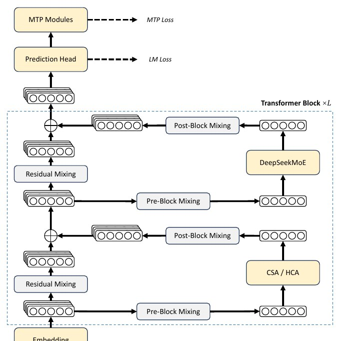
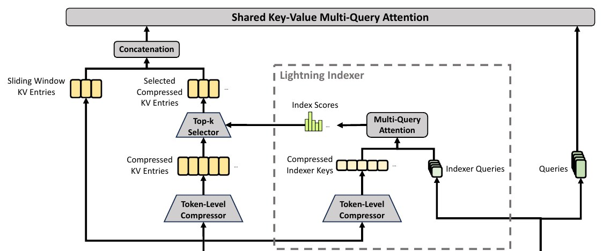
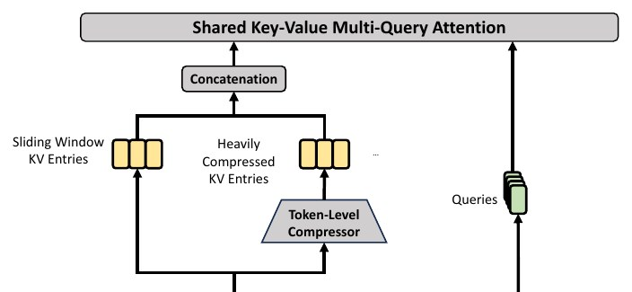
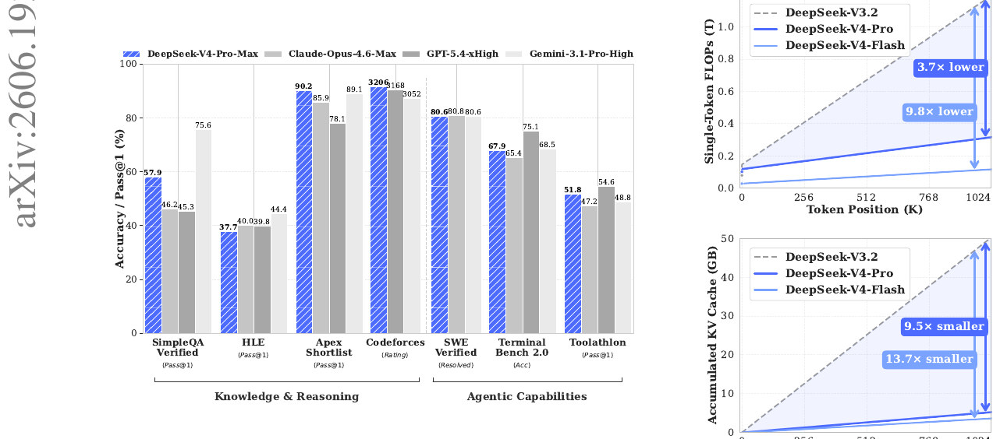
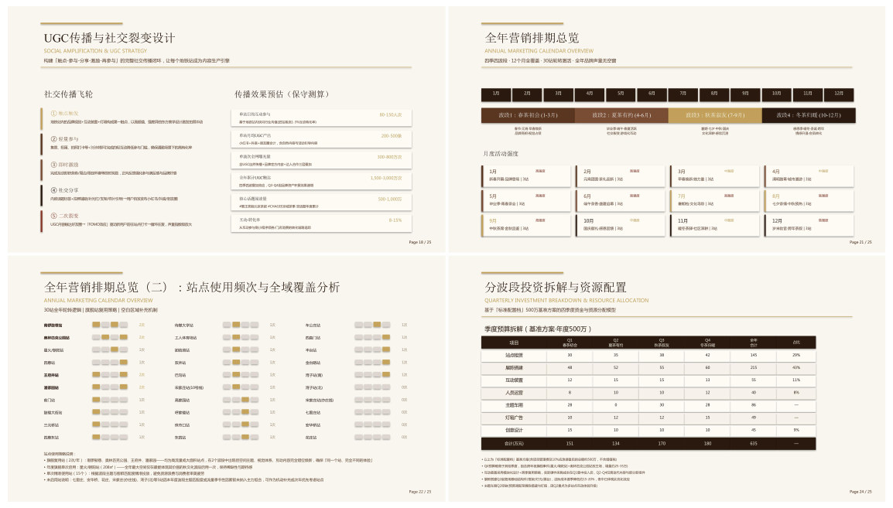

速览
注意力、残差、优化器三处同时换掉；MoE 和 MTP 基本沿用 V3。后训练从「混合 RL」换成「多教师 OPD」。
版本说明：本页依据的文本为 arXiv v1（首页水印「arXiv:2606.19348v1 [cs.CL] 26 Apr 2026」）。arXiv 编号是 2606，但 v1 发布日期为 2026-04-26，本页以 v1 日期为准。
五条要点
两种「压缩 KV」注意力交错使用
CSA 每 m=4 个 token 压成 1 条 KV，再用 lightning indexer 选 top-k；HCA 每 m′=128 个 token 压成 1 条，不做稀疏。两者都另加 128 token 的未压缩滑窗分支§2.3 · §4.2.1。相对 BF16 GQA8（head dim 128）基线，1M 时 KV cache 约为其 2%§2.3.4。
残差、优化器一起换
mHC 把残差流扩成 4 路，残差映射用 Sinkhorn-Knopp 投到双随机矩阵上，谱范数 ≤ 1§2.2，墙钟开销压到 1F1B 流水阶段的 6.7%§3.4.2。Muon 用 10 步两段式 Newton-Schulz；因为 Q / KV 有 RMSNorm，不用 QK-Clip§2.4。
稳住万亿 MoE 的两招
loss spike 与 MoE 离群值相关。Anticipatory Routing：用 θt−Δt 算路由，只在检测到 spike 时启用，启用期间额外耗时约 20%；SwiGLU clamp：linear 部分截到 [−10, 10]，gate 上限 10§4.2.3。作者承认原理尚不清楚§6。
后训练：混合 RL 换成多教师 OPD
每个领域先 SFT 再 GRPO，训出各自的专家；然后用 10 个以上教师、全词表 logit 的 reverse KL 做 on-policy 蒸馏，合并成一个学生模型§5.1.2。难验证的任务用 rubric + 生成式奖励模型，GRM 就是 actor 本身§5.1.1。
开源最强，但知识类仍落后闭源
表 6 的 22 行里，V4-Pro-Max 只有 LCB、Codeforces、Apex Shortlist 3 行是六个模型中最高推算；HLE 37.7，低于三家闭源（40.0 / 39.8 / 44.4）表 6。作者自估推理能力落后前沿闭源约 3–6 个月§1。
架构：CSA / HCA 混合注意力 + DeepSeekMoE + mHC
每个 Transformer 块有两个子层：注意力用 CSA 或 HCA，FFN 用 DeepSeekMoE。普通残差换成 mHC 的 Pre-Block / Post-Block / Residual 三种 Mixing。MTP 与 V3 完全相同§2 · 图 2。

3.1 CSA 与 HCA：先压缩 KV，再做注意力


示意：依据 §2.3 式 (9)–(27)、§2.3.3–2.3.4 与 §4.2.1 绘制。一层要么是 CSA 要么是 HCA，图中上下两条路径并不在同一层里同时出现。query 侧的低秩投影（cQt 同时供 indexer query 和注意力 query 使用）、partial RoPE（最后 64 维，输出端再乘位置 −i 的 RoPE）没有画。「≈ n/4」「≈ n/128」按原文压缩率换算。精确实现以开源代码为准，原文也这么建议§2.3.3。
CSA 的三个细节 §2.3.1
- 重叠压缩：每条压缩 KV 由 2m 个原始条目加权得到（本块的 Ca + 上一块的 Cb），softmax 在 2m 个元素上归一；但有效压缩率仍是 1/m。
- indexer 也在压缩键上跑：indexer 键用同样的压缩得到；indexer query 低秩生成，和主注意力共享 cQt。
- 分组输出投影：c·nh 很大（Pro 为 512 × 128），先把 nh 个头分 g 组各投到 dg 维，再投回 d。
效率从哪来 §2.3.4
- KV 混合精度存储：RoPE 维 BF16、其余 FP8，比纯 BF16 小近一半。
- lightning indexer 内的注意力计算用 FP4。
- attention top-k 比 V3.2 更小，短、中长度文本也更快。
- 最主要的还是压缩 + 混合：1M 时 KV 约为 BF16 GQA8 基线的 2%。
- 按 106 个 token 计，一层 CSA 约 25 万条压缩 KV，从中选 512 / 1024 条；一层 HCA 约 7,800 条推算。
示意：前两层的类型来自 §4.2.1（Flash 用纯滑窗注意力，Pro 用 HCA）。原文只说之后「CSA 与 HCA 交错」，没写具体比例和顺序，所以本图不画逐层排布。41 / 59 为本页用总层数减 2 得到推算。
3.2 mHC：受流形约束的超连接
公式 §2.2 式 (1)–(8)
为什么要约束
- 原版 Hyper-Connections 叠很多层后经常数值不稳，难以放大§2.2。
- 双随机矩阵的谱范数 ≤ 1，残差变换不放大信号；这类矩阵乘起来仍是双随机矩阵，所以层数再深也保持稳定。
- A、C 用 Sigmoid 保证非负且有界，避免信号互相抵消。
- 工程代价：激活显存和流水线通信都会变大。用融合 kernel、选择性重计算、改 DualPipe 1F1B 把墙钟开销压到 6.7%§3.4.2。mHC 方法本身出自 Xie et al. 2026（同为 DeepSeek 作者）。
3.3 相对 DeepSeek-V3 / V3.2 改了什么
| 部件 | V3 / V3.2 | V4 | 来源 |
|---|---|---|---|
| 注意力 | V3.2：MLA + DSA（lightning indexer 选 top-k） | CSA（压缩 + DSA）与 HCA（重度压缩、稠密）交错，外加 SWA 分支、attention sink、Q/KV RMSNorm、partial RoPE | §2.3 |
| 残差 | 普通残差 | mHC（nhc = 4，Sinkhorn 20 次） | §2.2 · §4.2.1 |
| MoE 打分 | Sigmoid(·) | Sqrt(Softplus(·)) | §2.1 |
| 负载均衡 | 无辅助损失策略 | 沿用无辅助损失策略，另加很轻的序列级平衡损失（权重 0.0001） | §2.1 · §4.2.2 |
| 路由约束 | 限制路由目标节点数 | 取消该限制，重新设计并行策略 | §2.1 |
| 前几层 FFN | 稠密 FFN | 换成 Hash 路由的 MoE 层（前 3 个 MoE 层） | §2.1 · §4.2.1 |
| MTP | 深度 1 | 与 V3 完全相同，深度 1 | §2.1 · §4.2.1 |
| 优化器 | AdamW | 大部分模块用 Muon（混合 Newton-Schulz），不用 QK-Clip | §2.4 |
| 专家精度 | — | 路由专家参数 FP4（后训练阶段做 MXFP4 QAT） | §1 · §5.2.1 |
数据
预训练数据只有一段文字描述（§4.1），没有任何配比、来源占比或过滤阈值。后训练数据同样只讲做法、不给条数。真正给了 n 的，是 DeepSeek 自建的几套内部评测集。
4.1 已披露规模
| 项目 | 原文数字 | 备注 | 来源 |
|---|---|---|---|
| 预训练语料总量 | 超过 32T token | 类别：数学、代码、网页、长文档及「其他高质量类别」 | §4.1 |
| 实际训练 token | Flash 32T · Pro 33T | 两者数据是否完全相同：原文未披露 | §4.2.2 |
| 稠密注意力阶段 | Flash 前 1T token | Pro「更长」，具体 token 数原文未披露 | §4.2.2 |
| 词表 | 128K | V3 tokenizer + 少量用于上下文构造的特殊 token | §4.1 |
| 各类数据配比 | 原文未披露（数学 / 代码 / 网页 / 长文档 / 多语种均无比例） | §4.1 | |
| mid-training 的 Agent 数据 | 只说「在 mid-training 阶段加入 agentic 数据」；量、来源原文未披露，§4.2 也没有单列 mid-training 阶段 | §4.1 | |
| 专家 SFT 数据 | 「高质量、领域特定数据」；条数、来源原文未披露 | §1 · §5.1.1 | |
| RL prompt / rubric 数据 | 「rubric-guided RL data」，只需「少量、多样的人工标注」；规模原文未披露 | §5.1.1 | |
| OPD 教师数 | > 10 | 覆盖多个领域；权重 wi「通常按专家相对重要性定」，具体值原文未披露 | §5.1.2 |
没有比例，所以本节不画配比条形图。
4.2 预训练语料：在 V3 数据上做了什么
预处理与打包 §4.1
- 预处理「大体沿用 V3」；继承 token-splitting 与 Fill-in-Middle（FIM）。
- 参考 Ding et al. 2024，把不同来源的文档打包成合适长度的序列，尽量少截断样本。
- 与 V3 不同：预训练用样本级 attention mask，同一序列里打包的不同文档互相看不到。
序列长度课程 §4.2.2
- 长度
- 4K → 16K → 64K → 1M（Flash、Pro 相同）
- 稀疏引入
- 在 64K 长度时引入，之后一直保持稀疏
- indexer 预热
- 引入稀疏前先有一个「短」阶段只预热 lightning indexer，长度未披露
- 各长度 token 数
- 原文未披露
4.3 后训练数据：格式比条数写得清楚
三档推理的数据格式 表 2 · 表 3
- Non-think：
</think> summary - Think High：
<think> 思考 </think> summary - Think Max：system prompt 开头额外注入一段指令（表 3：「Reasoning Effort: Absolute maximum with no shortcuts permitted…」），再接 think 格式
- 三档分别用不同的长度惩罚和上下文窗口做 RL，具体数值原文未披露§5.1.1
工具调用 schema：改用 XML 表 4
- 新增特殊 token
|DSML|，工具调用写成 XML 块：<|DSML|invoke name=…>/<|DSML|parameter name=… string="true|false">。 - 字符串参数原样写入并标
string="true"；其余类型用 JSON 并标string="false"。 - 作者称 XML 格式能「有效减少转义失败和工具调用错误」，但没给数字§5.1.1。
Quick Instruction：辅助任务 token 表 5
把对话产品里的辅助任务（要不要搜索、生成标题、生成搜索 query、权威性需求、领域、URL 是否需要读取）变成追加在输入后的特殊 token：<|action|> <|title|> <|query|> <|authority|> <|domain|> <|extracted_url|><|read_url|>。这样直接复用已算好的 KV cache，不必再维护一个单独的小模型重新 prefill§5.1.1。训练数据量未披露。
奖励数据：rubric + GRM §5.1.1
- 易验证任务：规则验证器或测试用例。
- 难验证任务：不再训练标量奖励模型，改为整理带 rubric 的 RL 数据，用生成式奖励模型（GRM）给轨迹打分。
- GRM 就是 actor 网络本身，评判能力和生成能力在同一个 RL 里一起优化；作者称因此只需「少量、多样的人工标注」。
4.4 自建评测集：本文给了 n 的数据
| 集合 | 构造 | 规模 | 来源 |
|---|---|---|---|
| 内部 Codeforces | 2025-05 至 2025-11 的 Division 1 比赛；测试集由领域专家构造；每题生成 32 个候选 | 14 场 · 114 题 | §5.3.1 |
| R&D Coding | 来自真实内部研发工作：功能开发、修 bug、重构、诊断；技术栈含 PyTorch、CUDA、Rust、C++；每题带原仓库、执行环境、人工标注评分 rubric | 50+ 名工程师提供约 200 题 → 严格质量过滤后留 30 题 | §5.4.4 |
| 白领任务 | 中文专业任务：深度信息分析、文档生成、文档编辑；内部 harness 带 Bash 与 web search；人工盲评 4 个维度 | 30 题 · 13 个行业 | §5.4.3 |
| 中文功能写作 | 日常写作请求，prompt 通常简短直接；与 Gemini-3.1-Pro 成对比较 | 3,170 条，6 大类 | 表 12 |
| 中文创意写作 | 按「指令遵循」「写作质量」两个轴成对比较 | 2,837 条，18 个文体 | 表 13 |
| 复杂指令 / 多轮写作 | 高复杂约束与多轮场景，对比 Claude Opus 4.5 | 49 + 147 = 196 条 | 表 14 |
| 搜索：Agentic vs RAG | 按 Easy / Hard × 客观 / 主观分桶 | 869 条 | 表 9 |
| 搜索：V4 vs V3.2 | 客观 3 个子类、主观 7 个子类 | 956 条 | 表 11 |
| 开发者问卷 | 日常用 V4-Pro 做 agentic coding 的 DeepSeek 开发者与研究员 | N = 85 | §5.4.4 |
写作与搜索的成对比较由谁判定（人工还是模型）：原文未说明；白领任务明确为人工盲评§5.4.3。
训练配方
预训练超参写得很全；后训练只说 GRPO 超参「与先前工作接近」，具体数值没给。
预训练
- token
- Flash 32T / Pro 33T
- 长度
- 4K → 1M
- 注意力
- 先稠密，64K 时转稀疏
- 优化器
- Muon + AdamW
产出 V4-Flash-Base / V4-Pro-Base§4.2.2。
专家 SFT
- 领域
- 数学、代码、Agent、指令遵循等
- 数据
- 高质量领域数据
- 条数
- 未披露
每个领域单独训练一个专家§1 · §5.1.1。
专家 RL（GRPO）
- 奖励
- 规则 / 测试 + rubric GRM
- 档位
- Non-think / High / Max
- 超参
- 「接近先前工作」
不同档位用不同长度惩罚和上下文窗口§5.1.1。
多教师 OPD 合并
- 教师
- > 10 个
- 损失
- Σ wi · KL(πθ ‖ πEi)
- 粒度
- 全词表 logit
完全替代 V3.2 的混合 RL 阶段§5.1 · §5.1.2。
5.1 预训练超参（Flash vs Pro）
| 超参 | V4-Flash | V4-Pro | 来源 |
|---|---|---|---|
| 结构 | |||
| 层数 / 隐藏维 d | 43 / 4096 | 61 / 7168 | §4.2.1 |
| 前两层注意力 | 纯滑窗注意力 | HCA | §4.2.1 |
| CSA 压缩率 m / top-k | 4 / 512 | 4 / 1024 | §4.2.1 |
| indexer 头数 / 头维度 | 64 / 128 | 64 / 128 | §4.2.1 |
| HCA 压缩率 m′ | 128 | 128 | §4.2.1 |
| query 头数 nh / 头维度 c | 64 / 512 | 128 / 512 | §4.2.1 |
| query 压缩维 dc | 1024 | 1536 | §4.2.1 |
| 输出投影组数 g / dg | 8 / 1024 | 16 / 1024 | §4.2.1 |
| 滑窗 nwin | 128 | 128 | §4.2.1 |
| MoE：共享 + 路由专家 | 1 + 256 | 1 + 384 | §4.2.1 |
| 专家中间维 / 激活专家数 | 2048 / 6 | 3072 / 6 | §4.2.1 |
| Hash 路由层 | 前 3 个 MoE 层 | 前 3 个 MoE 层 | §4.2.1 |
| MTP 深度 · mHC nhc · tmax | 1 · 4 · 20 | 1 · 4 · 20 | §4.2.1 |
| 总参 / 激活 | 284B / 13B | 1.6T / 49B | §4.2.1 |
| 训练 | |||
| 训练 token | 32T | 33T | §4.2.2 |
| batch（token） | 由小增到 75.5M，之后保持 | 最大 94.4M | §4.2.2 |
| LR：预热 / 峰值 / 末值 | 2000 步线性预热 / 2.7e-4 / 2.7e-5（cosine） | 「大体相同」/ 2.0e-4 / 2.0e-5 | §4.2.2 |
| 稠密注意力阶段 | 前 1T token | 更长（未给数） | §4.2.2 |
| AdamW | β1 = 0.9，β2 = 0.95，ε = 1e-20，weight decay = 0.1（用于 embedding、预测头、RMSNorm 权重；§2.4 另列 mHC 的静态偏置与门控因子） | §2.4 · §4.2.2 | |
| Muon | momentum 0.95，weight decay 0.1，更新矩阵 RMS 缩放到 0.18 以复用 AdamW 学习率；Nesterov；混合 Newton-Schulz 10 步：前 8 步系数 (3.4445, −4.7750, 2.0315)，后 2 步 (2, −1.5, 0.5) | §2.4 · §4.2.2 | |
| 负载均衡 | 无辅助损失的 bias 更新速度 0.001；序列级平衡损失权重 0.0001 | §4.2.2 | |
| MTP 损失权重 | 大部分训练 0.3，开始 LR 衰减时降到 0.1 | §4.2.2 | |
| SwiGLU clamp | linear 分量 [−10, 10]，gate 上限 10（两款模型全程使用） | §4.2.3 | |
5.2 训练稳定性
Anticipatory Routing §4.2.3
观察：loss spike 总伴随 MoE 层的离群值，路由机制会放大离群值。做法：第 t 步用当前参数 θt 算特征，但用历史参数 θt−Δt 算路由索引。实现上在 t−Δt 步提前取第 t 步的数据、预算路由并缓存。启用时墙钟额外开销约 20%，所以只在自动检测到 spike 时触发短回滚并启用，一段时间后切回常规训练。Δt 取值原文未披露。
SwiGLU Clamping §4.2.3
经验上能消除离群值、稳定训练，且「不损性能」，但没有给对照曲线或数值。作者在结论里承认这两招的原理「尚未被充分理解」§6。
5.3 后训练细节
全词表多教师蒸馏
- 学生在自己采样的轨迹上，对每个教师优化 reverse KL，按 wi 加权式 (29)
- 不用常见的「token 级 KL 估计当 advantage」，因为那样梯度方差大、训练不稳；改为保留完整 logit 分布§5.1.2
- 工程：教师权重放中心化存储、按需加载；只缓存教师最后一层 hidden state，训练时再过对应预测头重建 logit；样本按教师排序，保证显存里同时最多一个教师预测头§5.2.2
后训练阶段的量化感知训练
- MXFP4 量化两处：MoE 专家权重、CSA indexer 的 QK 路径§5.2.1
- index score 由 FP32 降到 BF16：top-k selector 提速 2×，KV 条目召回率 99.7%
- FP4 → FP8 反量化无损（E4M3 比 E2M1 多 2 位指数），可直接复用 FP8 训练框架；反向相当于 STE
- 推理和 RL rollout 直接用原生 FP4 权重，采样行为与线上部署一致
rollout 与沙盒
- token 级 Write-Ahead Log：被抢占的请求从断点续写。作者指出从头重生成在数学上不对：短回答更容易熬过中断，重来会让模型偏向短输出§5.2.3
- 百万 token RL：rollout 数据拆成轻量元数据与重量级逐 token 字段，按 mini-batch 用完即释放§5.2.4
- DSec 沙盒：Function Call / Container / microVM / fullVM 四种执行底座共用一套 API，单集群管理数十万个并发沙盒§5.2.5
Interleaved Thinking 的变化 §5.1.1 · 图 7
- V3.2：只在新用户消息到来时丢弃历史推理。
- V4 工具调用场景：全部推理内容在整段对话中保留，跨用户消息也不丢，依靠 1M 上下文。
- 普通对话场景：沿用旧规则，新用户消息到来就丢弃。
- Terminus 这类用 user 消息模拟工具交互的框架触发不了该路径，作者仍建议用 non-think 模式。
基础设施（与数据 / 评测相关的部分）§3
- MoE 通信与计算融合进一个流水线 kernel（MegaMoE，已开源）：通用推理提速 1.50–1.73×，RL rollout 等延迟敏感场景最高 1.96ק3.1
- batch-invariant + 确定性 kernel：任一 token 的输出与它在 batch 中的位置无关，预训练、后训练、推理逐位对齐§3.3
- CSA/HCA 的 KV 存盘复用共享前缀；SWA 的 KV 约为压缩 KV 的 8 倍，提供全量、周期 checkpoint、零缓存三种策略§3.5.2
原文给了什么、没给什么§4.2 · §5.1
| 项 | 状态 | 来源 |
|---|---|---|
| 预训练结构与优化器超参 | 完整给出（见 5.1 表） | §4.2 |
| Pro 的稠密阶段长度、indexer 预热长度 | 原文未披露 | §4.2.2 |
| 各序列长度阶段的 token 数 | 原文未披露 | §4.2.2 |
| Anticipatory Routing 的 Δt、检测阈值 | 原文未披露 | §4.2.3 |
| GRPO 的 ε、β、组大小、学习率 | 原文未披露（只说「与先前工作接近」） | §5.1.1 |
| 三档推理的长度惩罚、RL 上下文窗口 | 原文未披露（评测时窗口为 8K / 128K / 384K） | §5.1.1 · §5.3.1 |
| OPD 教师名单、权重 wi、步数 | 原文未披露 | §5.1.2 |
| 后训练总算力 | 原文未披露 | — |
评测
主对比对象：Claude-Opus-4.6（Max）、GPT-5.4（xHigh）、Gemini-3.1-Pro（High）、Kimi K2.6 Thinking、GLM-5.1 Thinking。知识与推理任务温度 1.0，上下文窗口 Non-think / High / Max 分别为 8K / 128K / 384K§5.3.1。

三图横轴均从 0 开始，满刻度为 100（第一图为百分比）。GPT-5.4 没有长上下文成绩：API 对大部分请求无响应，作者未评测§5.3.1。规律：知识与推理类（HLE、Apex Shortlist）对档位极敏感；代码 Agent 类（SWE Verified）即便 Non-think 也有 73.6。
6.1 主表：V4-Pro-Max vs 闭源 / 开源（表 6）
| 基准（指标） | Opus-4.6 Max | GPT-5.4 xHigh | Gemini-3.1-Pro High | K2.6 Thinking | GLM-5.1 Thinking | DS-V4-Pro Max |
|---|---|---|---|---|---|---|
| Knowledge & Reasoning | ||||||
| MMLU-Pro (EM) | 89.1 | 87.5 | 91.0 | 87.1 | 86.0 | 87.5 |
| SimpleQA-Verified (Pass@1) | 46.2 | 45.3 | 75.6 | 36.9 | 38.1 | 57.9 |
| Chinese-SimpleQA (Pass@1) | 76.4 | 76.8 | 85.9 | 75.9 | 75.0 | 84.4 |
| GPQA Diamond (Pass@1) | 91.3 | 93.0 | 94.3 | 90.5 | 86.2 | 90.1 |
| HLE (Pass@1) | 40.0 | 39.8 | 44.4 | 36.4 | 34.7 | 37.7 |
| LiveCodeBench (Pass@1) | 88.8 | - | 91.7 | 89.6 | - | 93.5 |
| Codeforces (Rating) | - | 3168 | 3052 | - | - | 3206 |
| HMMT 2026 Feb (Pass@1) | 96.2 | 97.7 | 94.7 | 92.7 | 89.4 | 95.2 |
| IMOAnswerBench (Pass@1) | 75.3 | 91.4 | 81.0 | 86.0 | 83.8 | 89.8 |
| Apex (Pass@1) | 34.5 | 54.1 | 60.9 | 24.0 | 11.5 | 38.3 |
| Apex Shortlist (Pass@1) | 85.9 | 78.1 | 89.1 | 75.5 | 72.4 | 90.2 |
| Long（1M） | ||||||
| MRCR 1M (MMR) | 92.9 | - | 76.3 | - | - | 83.5 |
| CorpusQA 1M (ACC) | 71.7 | - | 53.8 | - | - | 62.0 |
| Agentic | ||||||
| Terminal Bench 2.0 (Acc) | 65.4 | 75.1 | 68.5 | 66.7 | 63.5 | 67.9 |
| SWE Verified (Resolved) | 80.8 | - | 80.6 | 80.2 | - | 80.6 |
| SWE Pro (Resolved) | 57.3 | 57.7 | 54.2 | 58.6 | 58.4 | 55.4 |
| SWE Multilingual (Resolved) | 77.5 | - | - | 76.7 | 73.3 | 76.2 |
| BrowseComp (Pass@1) | 83.7 | 82.7 | 85.9 | 83.2 | 79.3 | 83.4 |
| HLE w/ tools (Pass@1) | 53.1 | 52.0 | 51.6 | 54.0 | 50.4 | 48.2 |
| GDPval-AA (Elo) | 1619 | 1674 | 1314 | 1482 | 1535 | 1554 |
| MCPAtlas Public (Pass@1) | 73.8 | 67.2 | 69.2 | 66.6 | 71.8 | 73.6 |
| Toolathlon (Pass@1) | 47.2 | 54.6 | 48.8 | 50.0 | 40.7 | 51.8 |
- 「-」：K2.6、GLM-5.1 的空格是因为它们的 API 太忙、没返回结果；GPT-5.4 长上下文空格是 API 对大部分请求无响应§5.3.1。
- Max / xHigh / High：各模型的推理强度档位，不是同一个刻度。
- Codeforces：内部基准，14 场 Div.1、114 题；每题 32 个候选中随机抽 10 个、随机排序作为提交序列，按人类同题同失败次数的中位得分计分，再换算 rating，对所有抽法求期望后取 14 场平均§5.3.1。V4-Pro-Max 在 Codeforces 人类榜单上当前排第 23§5.3.2。
- 代码 Agent（SWE 系列、Terminal Bench）：内部框架，只给 bash 和文件编辑两个工具，最多 500 步、512K 上下文§5.3.1。Terminal-Bench 2.0 原始集有环境问题（作者引 GLM-5.1 的说明），在 Verified 子集上 V4-Pro 约 72.0。
- 搜索 Agent（BrowseComp、HLE w/ tools）：内部 harness（web search + Python），500 步、512K；BrowseComp 沿用 V3.2 的 discard-all 上下文管理§5.3.1。
- 数学模板：V4-Pro-Max 做数学题时换用一段要求「严格证明」的专用模板，其余模型 / 档位用常规 boxed 模板§5.3.1。
- 长上下文：Opus 4.6 与 Gemini 3.1 Pro 的 MRCR / CorpusQA 由 DeepSeek 统一配置重测§5.3.1。
6.2 Base 模型（表 1，内部框架统一设置）
| 基准（指标 · shots） | V3.2-Base 37B / 671B | V4-Flash-Base 13B / 284B | V4-Pro-Base 49B / 1.6T |
|---|---|---|---|
| MMLU-Pro (EM · 5) | 65.5 | 68.3 | 73.5 |
| Simple-QA verified (EM · 25) | 28.3 | 30.1 | 55.2 |
| FACTS Parametric (EM · 25) | 27.1 | 33.9 | 62.6 |
| SuperGPQA (EM · 5) | 45.0 | 46.5 | 53.9 |
| MultiLoKo (EM · 5) | 38.7 | 42.2 | 51.1 |
| HumanEval (Pass@1 · 0) | 62.8 | 69.5 | 76.8 |
| BigCodeBench (Pass@1 · 3) | 63.9 | 56.8 | 59.2 |
| MATH (EM · 4) | 60.5 | 57.4 | 64.5 |
| LongBench-V2 (EM · 1) | 40.2 | 44.7 | 51.5 |
表头小字为激活 / 总参数表 1。原文规定差距不超过 0.3 视为同一水平。V4-Flash-Base 激活参数只有 V3.2-Base 的约 1/3推算，多数知识类和长上下文仍更高（TriviaQA 例外：82.8 vs 83.3）；但 BigCodeBench、MATH 低于 V3.2-Base。V4-Pro-Base 的 BigCodeBench（59.2）、CMath（90.9）也低于 V3.2-Base（63.9、92.6）表 1。
表 1 全部 24 行表 1
| 类别 | 基准（指标） | shots | V3.2-Base | V4-Flash-Base | V4-Pro-Base |
|---|---|---|---|---|---|
| World Knowl. | AGIEval (EM) | 0 | 80.1 | 82.6 | 83.1 |
| MMLU (EM) | 5 | 87.8 | 88.7 | 90.1 | |
| MMLU-Redux (EM) | 5 | 87.5 | 89.4 | 90.8 | |
| MMLU-Pro (EM) | 5 | 65.5 | 68.3 | 73.5 | |
| MMMLU (EM) | 5 | 87.9 | 88.8 | 90.3 | |
| C-Eval (EM) | 5 | 90.4 | 92.1 | 93.1 | |
| CMMLU (EM) | 5 | 88.9 | 90.4 | 90.8 | |
| MultiLoKo (EM) | 5 | 38.7 | 42.2 | 51.1 | |
| Simple-QA verified (EM) | 25 | 28.3 | 30.1 | 55.2 | |
| SuperGPQA (EM) | 5 | 45.0 | 46.5 | 53.9 | |
| FACTS Parametric (EM) | 25 | 27.1 | 33.9 | 62.6 | |
| TriviaQA (EM) | 5 | 83.3 | 82.8 | 85.6 | |
| Lang. & Reas. | BBH (EM) | 3 | 87.6 | 86.9 | 87.5 |
| DROP (F1) | 1 | 88.2 | 88.6 | 88.7 | |
| HellaSwag (EM) | 0 | 86.4 | 85.7 | 88.0 | |
| WinoGrande (EM) | 0 | 78.9 | 79.5 | 81.5 | |
| CLUEWSC (EM) | 5 | 83.5 | 82.2 | 85.2 | |
| Code & Math | BigCodeBench (Pass@1) | 3 | 63.9 | 56.8 | 59.2 |
| HumanEval (Pass@1) | 0 | 62.8 | 69.5 | 76.8 | |
| GSM8K (EM) | 8 | 91.1 | 90.8 | 92.6 | |
| MATH (EM) | 4 | 60.5 | 57.4 | 64.5 | |
| MGSM (EM) | 8 | 81.3 | 85.7 | 84.4 | |
| CMath (EM) | 3 | 92.6 | 93.6 | 90.9 | |
| Long Context | LongBench-V2 (EM) | 1 | 40.2 | 44.7 | 51.5 |
表 7：Flash / Pro × Non-Think / High / Max 全表表 7
| 基准（指标） | Flash Non-Think | Flash High | Flash Max | Pro Non-Think | Pro High | Pro Max |
|---|---|---|---|---|---|---|
| MMLU-Pro (EM) | 83.0 | 86.4 | 86.2 | 82.9 | 87.1 | 87.5 |
| SimpleQA-Verified (Pass@1) | 23.1 | 28.9 | 34.1 | 45.0 | 46.2 | 57.9 |
| Chinese-SimpleQA (Pass@1) | 71.5 | 73.2 | 78.9 | 75.8 | 77.7 | 84.4 |
| GPQA Diamond (Pass@1) | 71.2 | 87.4 | 88.1 | 72.9 | 89.1 | 90.1 |
| HLE (Pass@1) | 8.1 | 29.4 | 34.8 | 7.7 | 34.5 | 37.7 |
| LiveCodeBench (Pass@1-COT) | 55.2 | 88.4 | 91.6 | 56.8 | 89.8 | 93.5 |
| Codeforces (Rating) | - | 2816 | 3052 | - | 2919 | 3206 |
| HMMT 2026 Feb (Pass@1) | 40.8 | 91.9 | 94.8 | 31.7 | 94.0 | 95.2 |
| IMOAnswerBench (Pass@1) | 41.9 | 85.1 | 88.4 | 35.3 | 88.0 | 89.8 |
| Apex (Pass@1) | 1.0 | 19.1 | 33.0 | 0.4 | 27.4 | 38.3 |
| Apex Shortlist (Pass@1) | 9.3 | 72.1 | 85.7 | 9.2 | 85.5 | 90.2 |
| MRCR 1M (MMR) | 37.5 | 76.9 | 78.7 | 44.7 | 83.3 | 83.5 |
| CorpusQA 1M (ACC) | 15.5 | 59.3 | 60.5 | 35.6 | 56.5 | 62.0 |
| Terminal Bench 2.0 (Acc) | 49.1 | 56.6 | 56.9 | 59.1 | 63.3 | 67.9 |
| SWE Verified (Resolved) | 73.7 | 78.6 | 79.0 | 73.6 | 79.4 | 80.6 |
| SWE Pro (Resolved) | 49.1 | 52.3 | 52.6 | 52.1 | 54.4 | 55.4 |
| SWE Multilingual (Resolved) | 69.7 | 70.2 | 73.3 | 69.8 | 74.1 | 76.2 |
| BrowseComp (Pass@1) | - | 53.5 | 73.2 | - | 80.4 | 83.4 |
| HLE w/ tools (Pass@1) | - | 40.3 | 45.1 | - | 44.7 | 48.2 |
| MCPAtlas Public (Pass@1) | 64.0 | 67.4 | 69.0 | 69.4 | 74.2 | 73.6 |
| GDPval-AA (Elo) | - | - | 1395 | - | - | 1554 |
| Toolathlon (Pass@1) | 40.7 | 43.5 | 47.8 | 46.3 | 49.0 | 51.8 |
注意两处 Max 不如 High：Flash 的 MMLU-Pro（86.2 < 86.4）、Pro 的 MCPAtlas（73.6 < 74.2）表 7。
6.3 形式化数学（图 8，未裁图）
Putnam-200 Pass@8（实用设定）图 8 左
PutnamBench 的固定随机子集，沿用 Seed-Prover 协议，但把专有搜索工具换成开源 LeanExplore。V4-Flash-Max 81.00；Seed-2.0-Pro 35.50，Seed-1.5-Prover 与 Gemini-3-Pro 均为 26.50图 8。Lean v4.28.0-rc1，最多 500 次工具调用§5.3.1。
Putnam-2025（重算力设定）图 8 右
先生成自然语言解并自验证过滤，再交给形式化 agent 证明 Lean 命题；只有严格验证器 Comparator 接受才算对。DeepSeek-V4 120/120，与 Axiom（120/120）持平；Seed-1.5-Prover 110/120，Aristotle 100/120图 8 · §5.3.1。
6.4 真实场景评测（内部集，不可复现）
| 场景 | 对比 | n | 结果（V4 胜 / 对方胜 / 平） | 来源 |
|---|---|---|---|---|
| 中文功能写作 | V4-Pro vs Gemini-3.1-Pro | 3,170 | 62.65% / 34.10% / 3.25% | 表 12 |
| 中文创意写作 · 指令遵循 | V4-Pro vs Gemini-3.1-Pro | 2,837 | 60.03% / 39.44% / 0.53% | 表 13 |
| 中文创意写作 · 写作质量 | V4-Pro vs Gemini-3.1-Pro | 2,837 | 77.48% / 22.35% / 0.18% | 表 13 |
| 复杂指令 + 多轮写作 | V4-Pro vs Claude-Opus-4.5 | 196 | 45.9% / 52.0% / 2.0%（V4 落后） | 表 14 |
| 搜索：两种模式 | Agentic Search vs RAG（均为 V4-Pro） | 869 | 61.7% / 18.3% / 20.0% | 表 9 |
| 搜索：版本 | V4-Pro vs V3.2 | 956 | 28.1% / 10.4% / 61.5% | 表 11 |
| 白领任务（人工盲评） | V4-Pro-Max vs Opus-4.6-Max | 30 题 | 53% / 37% / 10%，「不输率」63% | §5.4.3 · 图 11 |
| R&D Coding（pass rate） | V4-Pro-Max vs Claude 系列 | 30 题 | V4-Pro-Max 67；Haiku 4.5 13、Sonnet 4.5 47、Opus 4.5 70、Opus 4.5 Thinking 73、Opus 4.6 Thinking 80 | 表 8 |
| 开发者问卷 | V4-Pro 能否当默认编码模型 | 85 人 | 是 52%，倾向是 39%，否 < 9% | §5.4.4 |
白领任务分项（图 11）：分析 55 / 8 / 37，生成 52 / 10 / 38，编辑 47 / 18 / 35（胜 / 平 / 负，%）。文字结论：V4 在任务完成度、内容质量上占优，指令遵循略逊 Opus，PPT 视觉设计「仍有很大提升空间」§5.4.3。Agentic Search 每次平均 16.2 次工具调用，prefill 13,649 token、输出 1,526 token；RAG 为 10,453 / 1,308表 10。

新在哪
只列能在原文核对、且不是常规工程的点。Muon、OPD、mHC 都不是本文首提，新的是规模化的具体做法。
CSA + HCA：两种压缩率的 KV 压缩注意力层交错
CSA 在 DSA 之前先把 KV 压到 1/4（带重叠的加权压缩），HCA 压到 1/128 后直接做稠密注意力；两者共享「K = V 的单头 MQA + 分组输出投影 + 滑窗分支 + attention sink」，输出端还乘位置 −i 的 RoPE 以保留相对位置§2.3。1M 时 V4-Pro 的 FLOPs / KV 分别为 V3.2 的 27% / 10%§1。
没有和「纯 DSA」或「只用 CSA」的同规模消融，压缩对质量的影响只能从表 1 / 表 6 的总体结果间接看。
mHC 首次用到万亿参数 MoE 的预训练
残差映射约束在双随机矩阵上，输入、输出映射用 Sigmoid 限幅；工程上墙钟开销 6.7%，mHC 里输出维度只有 24 的小矩阵乘也专门做了确定性 split-k§2.2 · §3.3 · §3.4.2。
方法来自 DeepSeek 自己的 mHC 论文（Xie et al. 2026）；本文没有 V4 规模的「有 / 无 mHC」对照。
Muon 在 1.6T MoE 上的落地方案
两段式混合 Newton-Schulz（8 + 2 步）；用 Q/KV RMSNorm 代替 QK-Clip；ZeRO 下用背包算法给稠密参数分桶（填充开销通常 < 10%）；MoE 梯度随机舍入到 BF16 后先 all-to-all、再在本地用 FP32 求和，同步通信量减半§2.4 · §3.4.1。
「收敛更快、更稳」没有给出与 AdamW 的对照曲线。
用全词表多教师 OPD 完全替代混合 RL
10 个以上专家教师，保留完整 logit 分布计算 reverse KL；靠「只缓存教师最后一层 hidden state、按需重建 logit」「样本按教师排序」让全词表蒸馏在万亿参数教师上跑得起来§5.1.2 · §5.2.2。
没有和 V3.2 式混合 RL、或 token 级 OPD 的同底座对比。
Anticipatory Routing：路由与主干错开更新
用 Δt 步之前的参数算路由，打破「路由放大离群值 → loss spike」的循环；只在检测到 spike 时启用，平均额外开销「可忽略」§4.2.3。
作者明说原理未被充分理解；没有 spike 频率或 loss 曲线的定量对比。
对图像编辑数据 / 评测 / caption 的启示
这是纯文本 LLM 报告，没有图像，也没有 caption 流水线。可借鉴的在三处：预训练数据的「去模板化」过滤、后训练的格式与奖励设计、以及一整套带 n、分子类、含平局的内部评测。每条先写论文怎么做，再给一条迁移建议（不是论文内容）。
D1先过滤「批量生成、模板化」的内容
论文：网页数据专门过滤批量自动生成和模板化内容，理由是降低 model collapse 风险§4.1。
迁移建议，不是论文内容：编辑数据爬回来的源图里，AIGC 图、同一模板批量出的商品图、套版海报占比会越来越高。按版式 / 构图 embedding 聚类，同一簇只留少量；每个数据版本单独记录 AIGC 检测命中率，看它有没有悄悄上涨。
D2按信息密度挑「长样本」
论文：重点整理长文档，优先科学论文、技术报告等「有独特学术价值」的材料，以支撑 1M 上下文训练§4.1。
迁移建议，不是论文内容：编辑源图按「保持难度」分层：多主体、含文字、有人脸、细纹理的复杂场景最考验非编辑区保持，应该优先进入数据。给每张源图打一个复杂度字段（主体数、OCR 文本量、人脸数），配比时按字段调权重，而不是按来源调。
D3打包而不截断，并加样本级 mask
论文：把不同来源的文档打包成序列以减少截断；与 V3 不同，预训练改用样本级 attention mask§4.1。
迁移建议，不是论文内容：多图参考编辑、多轮编辑做序列打包时，同一序列里的不同样本必须用块对角 mask 隔开，否则参考图会被别的样本「看到」。长 caption 宁可单独成包也不要截断，截断会让「保持」类条款系统性缺失。
D4失败样本不是随机丢的
论文：rollout 被抢占时如果从头重生成，会引入长度偏差，因为短回答更容易熬过中断；所以用 token 级 WAL 断点续写§5.2.3。
迁移建议，不是论文内容：调编辑 API 或 VLM 打 caption 时，超时、报错、被限流的请求往往集中在大分辨率、复杂指令上。直接丢掉会让数据偏向简单样本。要记录失败并重试到底，再比较「请求分布」和「最终入库分布」在分辨率、指令长度、类别上的差异。
D5从真实工作流采题，再狠狠过滤
论文：R&D Coding 集从 50+ 名工程师的真实工作里收了约 200 题，每题带原仓库、环境和人工 rubric，严格过滤后只留 30 题§5.4.4。
迁移建议，不是论文内容：内部编辑评测集从线上真实请求（脱敏后）里采，每条配「必须发生的变化」和「必须保持的内容」两段 rubric；留存率低没关系，30 条判得准的题胜过 300 条口径含糊的题。同时记录采样数和留存数。
C1结构化格式要避开转义陷阱
论文：工具调用改成 XML 式 |DSML| 块，字符串参数原样写入并用 string="true" 标注；作者称这样减少了转义失败和调用错误表 4 · §5.1.1。
迁移建议，不是论文内容：JSON caption 里一旦出现「把招牌改成 "Joe's"」这类带引号、换行的文字编辑，就容易出现解析失败。对含原文文字的字段用标签分隔或显式标类型；把 caption 解析失败率当作数据版本的固定指标。
C2粒度档位要显式标出来
论文：三档推理用不同响应格式区分；Max 档在 system prompt 开头注入固定指令；各档 RL 的长度惩罚不同表 2 · 表 3 · §5.1.1。
迁移建议，不是论文内容：短指令、中等描述、稠密 caption 三种粒度，用显式控制 token 或固定前缀区分后一起训练，推理时按需选择；不要把三种粒度混在同一格式里，让模型自己猜该写多长。
C3辅助标签复用同一次前向
论文：Quick Instruction 把「要不要搜索、领域、权威性需求、标题」等辅助任务变成追加的特殊 token，直接复用已有 KV cache，省掉单独的小模型表 5 · §5.1.1。
迁移建议，不是论文内容：captioner 读完图像和编辑对之后，在同一上下文后面追加几个专用 token，分别输出操作类型、领域、难度、是否涉及人像 / 文字，共享前缀的 KV，不必为每个元数据再跑一遍 VLM。
C4判官用 rubric，并跟生成一起训
论文：难验证任务不训标量奖励模型，改用带 rubric 的 RL 数据 + 生成式奖励模型；GRM 由 actor 自己担任，只需少量多样的人工标注§5.1.1。
迁移建议，不是论文内容：编辑判官按逐条指令生成 rubric（变化项 + 保持项）再打分，比单一「整体分」更能定位失败。如果判官和被训模型共享参数，必须另留一份人工标注的判官校验集，定期检查判官和人工的一致率有没有下降。
E1用随机子集的期望，而不是 best-of-N
论文：Codeforces 每题生成 32 个候选，随机抽 10 个、随机排序作为提交序列，对所有抽法求期望 rating§5.3.1。
迁移建议，不是论文内容：每条编辑指令采 K 个 seed，报告「随机抽 k 个时的期望得分」和单 seed 均值，而不是挑最好的一张；展示样例如果是挑出来的，要写明挑选规则。
E2成对比较要给每个子类的 n 和平局
论文：写作、搜索的成对比较按子类列出条数和胜 / 负 / 平；V4 vs V3.2 搜索的平局率高达 61.5%表 9 · 表 11–13。
迁移建议，不是论文内容：GSB 盲测按编辑类别（加物、删物、换风格、改文字、人像）分别报 n 与 G/S/B。某类平局率很高时，要么两版真的没差别，要么这类题太容易，需要换更难的题。
E3最难子集单独报
论文：总体写作胜过 Gemini，但只看高复杂约束和多轮写作时，Opus 4.5 以 52.0% 对 45.9% 反超表 14 · §5.4.1。
迁移建议，不是论文内容：维护一个「多约束 + 多轮编辑」的难题切片并单独报告；总体胜率很容易掩盖难题上的退步，而难题往往正是用户最在意的场景。
E4人评拆维度，不要只给总分
论文：白领任务人工盲评分 4 个维度：任务完成、指令遵循、内容质量、版式美观。结果 V4 完成度和质量占优，但指令遵循略逊§5.4.3。
迁移建议，不是论文内容：编辑人评拆成指令完成、非编辑区保持、画质、美感四项分别打分。这几项经常此消彼长（改得多则完成度高、保持差），合成单一分数会把取舍藏起来。
E5评测要能逐位复现
论文：batch-invariant + 确定性 kernel 保证任一 token 的输出与它在 batch 中的位置无关，训练与推理逐位一致，用于调试和稳定性分析§3.3。
迁移建议，不是论文内容：编辑评测固定 seed，并确认同一输入在不同 batch size 下输出一致；否则两次跑分的波动可能大于版本间的真实差异。先测一次「同版本重跑」的分差，作为判断改进是否显著的下限。
局限与存疑
- 几乎没有消融：CSA/HCA、mHC、Muon、Anticipatory Routing、SwiGLU clamp、OPD 都没有同规模的「有 / 无」对照表；效率优势只有图 1 的估算曲线（等效 FP8 FLOPs）§1 · 图 1。
- 数据配比全未披露：只有「超过 32T」和定性描述；数学 / 代码 / 网页 / 长文档 / 多语种比例、过滤阈值、mid-training 的 Agent 数据量都没给，§4.2 也没有单列 mid-training 阶段§4.1 · §4.2。
- 正文与表格不一致：§5.3.2 说 V4-Pro-Max 在 MMLU-Pro、GPQA、HLE 上「略胜 Kimi 和 GLM」，但表 6 中 GPQA 为 90.1，低于 K2.6 的 90.5。「SimpleQA-Verified 领先所有开源基线 20 个百分点」：对 GLM-5.1 实际差 19.8推算表 6。
- 「Base 全面领先」有例外：正文称 V4-Pro-Base「几乎全面领先」，但 BigCodeBench（59.2 vs 63.9）、CMath（90.9 vs 92.6）低于 V3.2-Base；MGSM 也低于 V4-Flash-Base（84.4 vs 85.7）表 1 · §4.3.2。
- 评测口径不统一：代码 Agent 用内部框架（bash + 文件编辑，500 步，512K）；Terminal Bench 2.0 原始集有环境问题，Verified 子集分数约 72.0 只在正文提及；Codeforces 为内部集；V4-Pro-Max 做数学用专门模板；K2.6 / GLM-5.1 / GPT-5.4 多处空缺§5.3.1。
- Agent 搜索有短板：HLE w/ tools 48.2 是表 6 六个模型里最低的；SWE Pro 55.4 低于 K2.6、GLM-5.1 和 GPT-5.4表 6。
- 真实场景评测不可复现：写作、搜索、白领、R&D 集都是内部集，未公开；写作 / 搜索成对比较由谁判定没说明；白领任务只有 30 题，R&D 集 30 题，开发者问卷 N = 85 且都是 DeepSeek 内部人员§5.4。
- 后训练超参与规模缺失：GRPO 超参只说「与先前工作接近」；各档长度惩罚、OPD 教师名单与权重、SFT / RL 数据量均未给§5.1。
- MRCR 的两个口径：图 9 是 MRCR 8-needle 随输入长度的曲线（128K 内稳定，之后下降），表 6 / 表 7 是「MRCR 1M」单值，两者口径不同，不要直接对照图 9 · 表 6。
- 作者自述：预览版；为降低风险保留了很多「初步验证过」的组件，架构偏复杂；两项稳定性技巧原理不清；推理能力落后前沿闭源约 3–6 个月；尚无多模态能力，正在开发§1 · §6。许可证全文未提及。
图表索引
| 编号 | 内容 | 本页位置 |
|---|---|---|
| 图 1 | 首页基准柱状图 + 单 token FLOPs / KV cache 曲线（figures/fig1.jpg，p.1） | §06 |
| 图 2 | V4 总体架构：CSA/HCA + DeepSeekMoE + mHC（figures/fig2.jpg，p.6） | §03 |
| 图 3 | CSA 核心结构（figures/fig3.jpg，p.9） | §03.1 |
| 图 4 | HCA 核心结构（figures/fig4.jpg，p.11） | §03.1 |
| 图 5 | 细粒度 EP 通信计算重叠示意（未裁图，仅文字引用） | §05.3 |
| 图 6 | 异构 KV cache 布局（未裁图，仅文字引用） | §05.3 |
| 图 7 | Interleaved thinking 管理（未裁图，仅文字引用） | §05.3 |
| 图 8 | 形式化数学：Putnam-200 / Putnam-2025（未裁图，数字引自图中标注） | §06.3 |
| 图 9 | MRCR 8-needle 随输入长度变化（未裁图） | §09 |
| 图 10 | HLE / Terminal Bench 2.0 随推理档位与 token 数（未裁图） | — |
| 图 11 / 12 | 白领任务胜率与分维度得分（未裁图；胜率数字引自图 11 标注） | §06.4 |
| 图 13 | 白领任务示例：奶茶品牌 × 北京地铁营销方案（figures/fig11.jpg，p.43；素材清单误标为图 11） | §06.4 |
| 图 14 / 15 | 白领任务示例：纳指定投策略对比、诺贝尔科学奖分析报告（未裁图） | — |
| 表 1 | Base 模型对比（V3.2 / V4-Flash / V4-Pro） | §06.2 |
| 表 2 / 3 | 三档推理模式；Think Max 注入指令 | §04.3 |
| 表 4 | DSML 工具调用 schema | §04.3 |
| 表 5 | Quick Instruction 特殊 token | §04.3 |
| 表 6 | V4-Pro-Max vs 闭源 / 开源主表 | §06.1 |
| 表 7 | Flash / Pro × 三档推理 | §06 图 · 折叠 |
| 表 8 | R&D Coding pass rate | §06.4 |
| 表 9–11 | 搜索：Agentic vs RAG 胜率、成本；V4 vs V3.2 | §06.4 |
| 表 12–14 | 中文功能写作、创意写作、复杂指令 / 多轮写作 | §06.4 |
| 示意图 | CSA / HCA 计算流程、层排布（本页绘制）；三张柱状图（本页据 §1、表 6、表 7 绘制） | §03 · §06 |